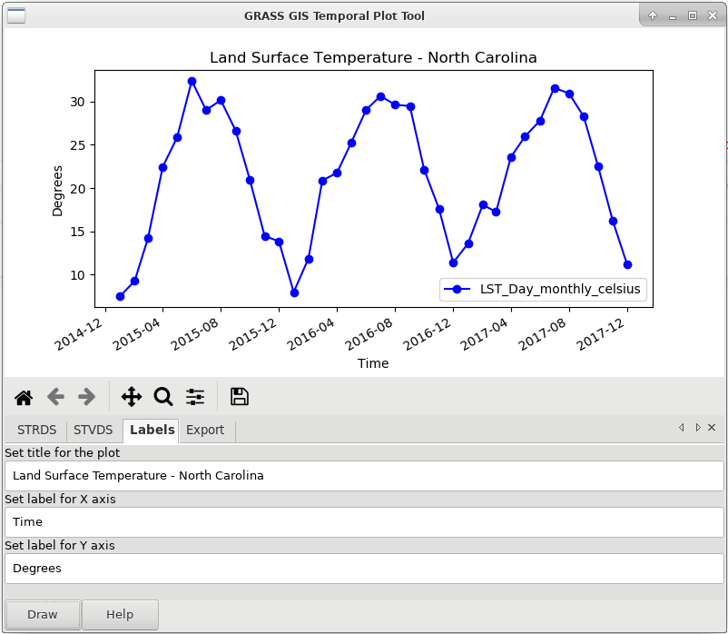
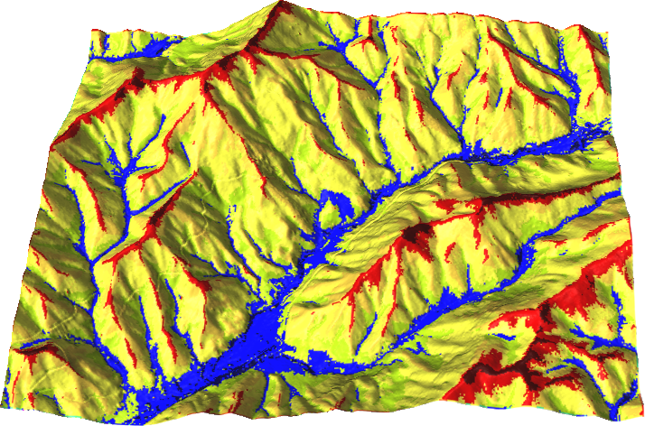
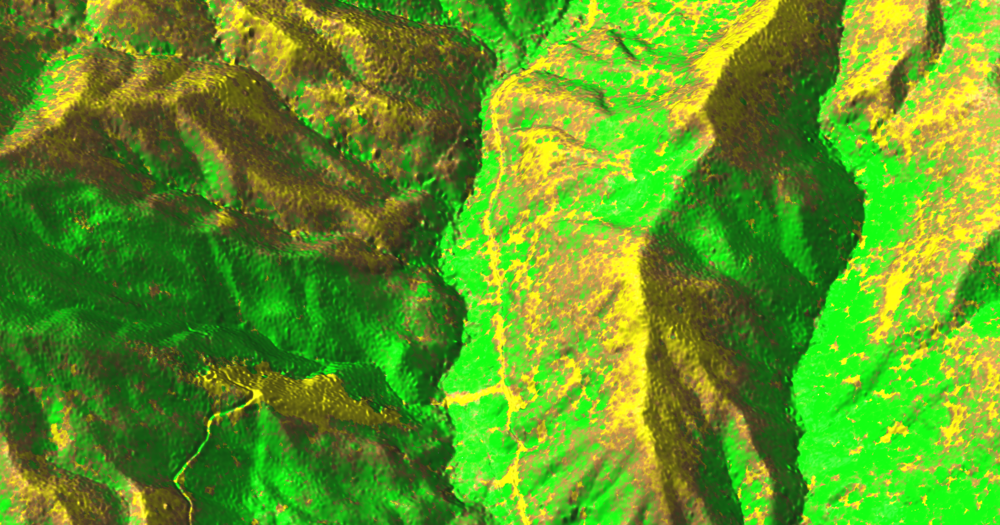
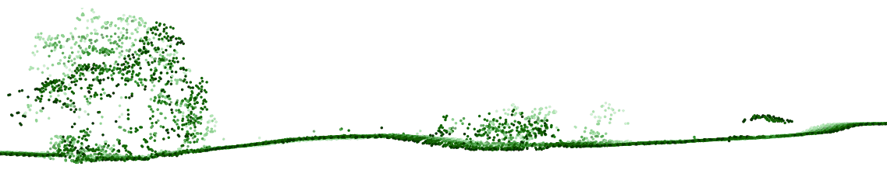

GRASS GIS
What's New
NCSU GeoForAll Lab
at the
Center for Geospatial Analytics
North Carolina State University
Corey White, NCSU
Doug Newcomb, USFWS

NCGIS 2019 Winston-Salem
What's Old
All-in-one functionality
- All matured tools available right away
- Download of experimental tools possible
- Hydrology, remote sensing, lidar, network analysis, …

Return of investment
Learn once, use forever.
- Emphasis on backwards compatibility
- No increasing license fees over time
- Employer-independent


Scientific foundation
- references to papers associated with modules
- references to related scientific papers

Community shares improvements
- GRASS GIS community provides software to the public
- Shares its source code
- Includes latest additions

New in 7.0
trac.osgeo.org/grass/wiki/Grass7/NewFeaturesTemporal Framework
Manage and analyze spatio-temporal datasets (time series)
by Sören Gebbert and Thomas Leppelt
(visualization tools by Anna Petrasova and Luca Delucchi)
Animation Tool
Visualize spatio-temporal datasets and other series

by Anna Petrasova
...and 10,000 other changes
In total, more than 10,000 changes have been implemented so far with respect to GRASS GIS 6.4.
New in 7.2
trac.osgeo.org/grass/wiki/Grass7/NewFeatures72Simple Python Editor
Create Python scripts and modules with ease

by Vaclav Petras
Vector legend
d.legend.vect - automatic and customizable legends

by Adam Laza and GSoC mentors
3D raster flows and gradients
r3.flow - flow lines in a 3D raster
r3.gradient - gradients in a 3D raster

by Anna Petrasova
Simplified batch processing
grass72 /grassdata/nc_spm/work1 --exec \
r.viewshed input=elevation output=viewshed \
coordinates=642964,222890
by Vaclav Petras
Temporal Algebra

by Thomas Leppelt and Soeren Gebbert
Links to source code

by Luca Delucchi
Graphical index

by Vaclav Petras; designer needed!
New in 7.4
trac.osgeo.org/grass/wiki/Grass7/NewFeatures74Geomorphon
r.geomorphon - landform detection
by Jarek Jasiewicz and Tomek Stepinski
Parallelized solar radiation
r.sun - new parallelized version

by Stanislav Zubal and Michal Lacko
Data catalog
g.gui.datacatalog - browse, manage, and reproject raster and vector maps

by Tereza Fiedlerova and Anna Petrasova
New in 7.6
trac.osgeo.org/grass/wiki/Grass7/NewFeatures76Computational Region in Map Display
Map Display now shows computational region extent by default

by Martin Landa
Perceptually uniform color tables
grey, viridis, inferno, magma, plasma, and grass
viridis as default color table

by Vaclav Petras and Pierre Roudier
Virtual raster mosaics
r.buildvrt - creates virtual raster (VRT) mosaics from a list of input raster maps

by Markus Metz
Faster and higher compression
ZSTD - an improvement over ZLIB method, providing both faster and higher compression

by Markus Metz
Segment library all-in-memory mode
the segment library uses a new fast all-in-memory cache instead of a file-based cache if all data can be kept in memory
faster cost path, point cloud binning, stream and flow, i.segment, v.surf.bspline
by Markus Metz
Simplified raster algebra
r.mapcalc.simple - creates virtual raster (VRT) mosaics from a list of input raster maps
r.mapcalc.simple expression="A + B + C" a=zeros b=ones c=twos output=result1
by Vaclav Petras
New Addons
SLIC
i.superpixels.slic - image segmentation using SLIC superpixels
by Rashad Kanavath and Markus Metz
Tools for Sentinel Data
download, import, preprocessing, cloud detection, and masking of Sentinel 2 data

by Roberta Fagandini, Martin Landa, Moritz Lennert, and Roberto Marzocchi
Point clouds with PDAL
r.in.pdal - binning of points using PDAL for LAS reading
by Anika Bettge and Vaclav Petras
Point cloud transects
v.profile.points - transects of point clouds
by Vaclav Petras
Itzï
Hydrologic and hydraulic model of surface water flow

by Laurent Courty
github.com/wenzeslaus/grass-gis-talks